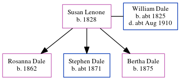

Jane Dale (née Laws) 1859 -
[ Home ] | [ Calendar ] | [ Surnames Index ] | [ Errors ] | [ Family History ]Jane Laws, the wife of Thomas Henry Dale (the first cousin four-times-removed on the father's side of Nigel Horne), was born in Frindsbury, Kent, England on 25 Jan 18591,2,3 and married Thomas (a dock yard labourer with whom she had 5 children: Thomas Henry, Bertha Elizabeth, Lily, Hilda May and Sidney Robert, along with 2 surviving children) at All Saints in Frindsbury on 15 Jan 18814.
During her life, she was living at Montford Road, Strood, Kent, England on 5 Apr 18911; and on Brompton Lane in Strood on 31 Mar 19012 and on 2 Apr 19113.
Children
- Thomas Henry was born on 12 Jan 1882
- Lily was born in 1887
- Sidney Robert was born in 1891
Citations
- 1891 England, Wales & Scotland Census - Findmypast (was age 33 and the wife of the head of the household)
- 1901 England, Wales & Scotland Census - Findmypast (was age 43 and the wife of the head of the household)
- 1911 Census for England & Wales - Findmypast (was age 52 and the wife of the head of the household)
- England Marriages 1538-1973 - Findmypast
Media
1891 England, Wales & Scotland Census - GBC/1891/0005373803
Family Tree
Map
Generated by ged2site. Last updated on Jul 3, 2024